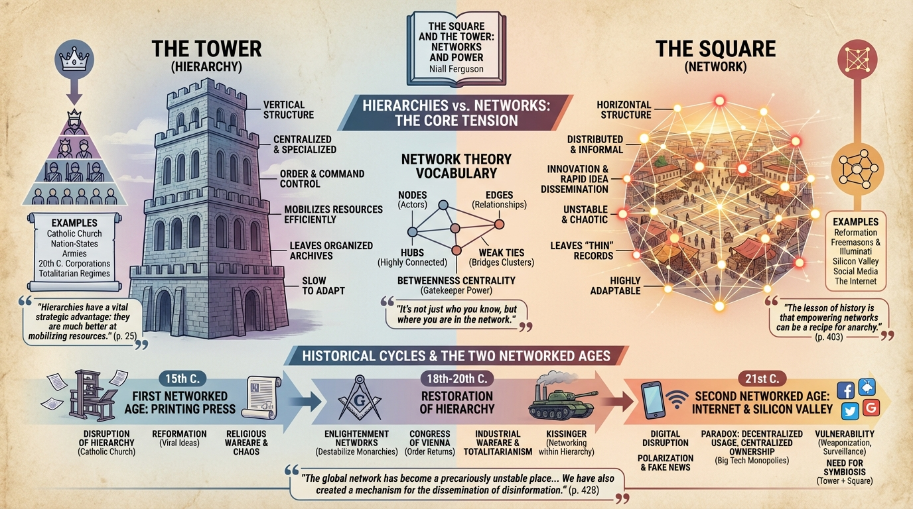

isbn-13: 9780735222939
Audible
AI Generated Content
Generated by gemini-3-pro-preview

The Central Thesis: Hierarchies vs. Networks
- Niall Ferguson argues that human history is defined by the tension between two organizational forms: the hierarchy (the “Tower”) and the network (the “Square”).
- Hierarchies are vertically structured, centralized, and specialized. They are designed for order and command control (e.g., the Catholic Church, the nation-state, armies).
- Networks are horizontally structured, distributed, and informal. They are designed for innovation and the rapid dissemination of ideas (e.g., the Reformation, the Illuminati, Silicon Valley).
- Ferguson posits that historians have traditionally focused on hierarchies because they leave behind organized archives. Networks, being informal and fluid, often leave “thin” historical records and are consequently underestimated in historical analysis.
“Hierarchies have a vital strategic advantage over networks: they are much better at mobilizing resources.” (p. 25)
Network Theory and Vocabulary
- The book utilizes concepts from graph theory and sociology to analyze historical events. Ferguson defines key terms such as “nodes” (individual actors), “edges” (relationships), “hubs” (highly connected nodes), and “weak ties” (connections that bridge different clusters of people).
- He argues that the power of a network depends on its structure. A network with high “betweenness centrality” allows a specific node to act as a bridge or gatekeeper between otherwise disconnected groups.
- The author challenges the popular notion that “it’s not what you know, it’s who you know,” refining it to: “It’s not just who you know, but where you are in the network.”
The First Networked Age: The Printing Press
- The invention of the printing press in the 15th century launched the first great networked age. Ferguson illustrates how Martin Luther utilized this technology to disrupt the ultimate hierarchy of the time: the Roman Catholic Church.
- The Reformation is presented as a viral phenomenon where pamphlets spread through decentralized networks, bypassing the Church’s attempt to control information.
- However, Ferguson notes that this network disruption led to over a century of chaos and religious warfare, illustrating his argument that networks are often unstable and destructive.
The Enlightenment and Secret Societies
- The book analyzes 18th-century associative life, specifically the Freemasons and the Illuminati.
- Ferguson demystifies the Illuminati, describing them not as an omnipotent shadow government, but as a specific, historically bounded network of intellectuals that was successfully suppressed by the Bavarian authorities.
- He argues that while conspiracy theorists often exaggerate the power of these groups, the networks themselves were real vehicles for spreading Enlightenment ideals that eventually destabilized monarchies (most notably in the American and French Revolutions).
The Restoration of Hierarchy (The 19th and 20th Centuries)
- Following the chaos of the Revolutionary era, the 19th century saw the re-establishment of hierarchical order, exemplified by the Congress of Vienna and the “Pentarchy” of European powers.
- The 20th century represents the zenith of the “Tower.” Industrial warfare, totalitarian regimes (Stalinism, Nazism), and the corporate structures of the mid-century United States relied on rigid, vertical hierarchies.
- Ferguson uses the example of the Soviet Union to show the limitations of pure hierarchy, noting that while effective for control, it stifles the information flow necessary for economic adaptability.
Henry Kissinger as Networker
- Drawing from his own biographical work on Henry Kissinger, Ferguson presents the former Secretary of State as a unique figure who understood how to operate a network within a rigid hierarchy.
- He characterizes Kissinger’s diplomacy not just as “Realpolitik,” but as the exploitation of a central position in a global network of relationships to maximize American leverage.
The Second Networked Age: Silicon Valley and the Internet
- The contemporary era mirrors the post-printing press era. The internet has drastically reduced the cost of communication, allowing networks to once again challenge established hierarchies.
- Ferguson critiques the techno-optimism that characterized the early internet age (e.g., the belief that connectivity would inevitably lead to democracy).
- He argues that the “Square” has not produced a utopia but has instead enabled polarization, extremism, and the spread of fake news.
“The lesson of history is that empowering networks can be a recipe for anarchy.”* (p. 403)
The Vulnerability of the New Networks
- The book asserts that the new digital networks are paradoxical: they are decentralized in usage but highly centralized in ownership (Google, Facebook, Amazon).
- Ferguson warns that these platforms have created “scale-free” networks where the “rich get richer,” leading to massive monopolies that lack the accountability of traditional hierarchies.
- He highlights the fragility of these networks, noting how easily they can be weaponized by external actors (such as Russian interference in the 2016 US election) or utilized by hierarchies (such as the Chinese Communist Party) to perfect the surveillance state.
- The conclusion suggests that a world dominated entirely by networks is prone to volatility and that a functional society requires a symbiosis between the creativity of the Square and the stability of the Tower.
“The global network has become a precariously unstable place… We have undoubtedly created a remarkably fast and capacious planetary network. But we have also created a mechanism for the dissemination of disinformation.” (p. 428)
Further Reading
- Linked: The New Science of Networks by Albert-László Barabási
- The Master Switch: The Rise and Fall of Information Empires by Tim Wu
- Team of Teams: New Rules of Engagement for a Complex World by General Stanley McChrystal
- Connected: The Surprising Power of Our Social Networks and How They Shape Our Lives by Nicholas Christakis and James Fowler
- Six Degrees: The Science of a Connected Age by Duncan J. Watts